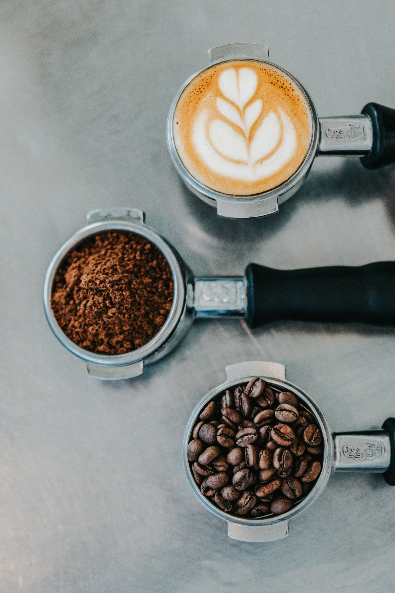
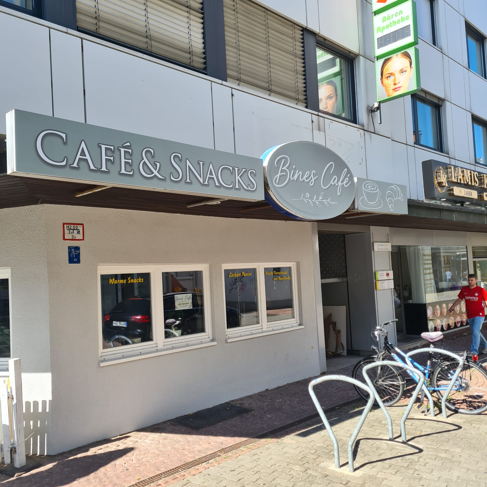
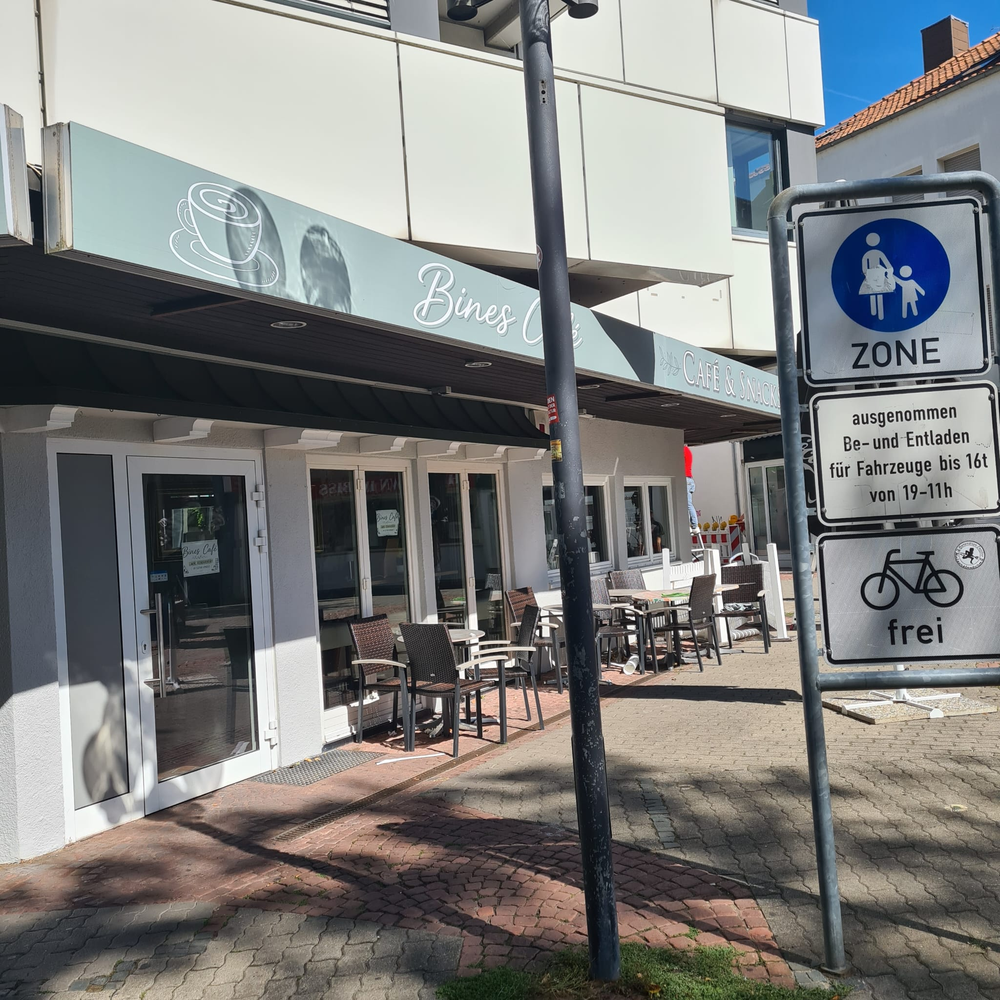

Frisch gebrühter Kaffee, leckeres Essen und ein gemütlicher Ort zum Entspannen.
Besuchen Sie unsEs ist soweit! Wir eröffnen am Mittwoch, den 16.09.2027. Wir freuen uns, Sie bei uns begrüßen zu dürfen!

Bines Cafe ist ein freundlicher Treffpunkt in der Nachbarschaft, der handgemachten Kaffee, hausgemachte Leckereien und kleine Snacks serviert. Ob zum Plaudern mit Freunden oder zum Arbeiten – unser Café ist der perfekte Ort zum Entspannen.


Adresse: Pirmasenserstraße 24-26, Kaiserslautern
Telefon: 0631 62417712
E-Mail: Noch nicht verfügbar